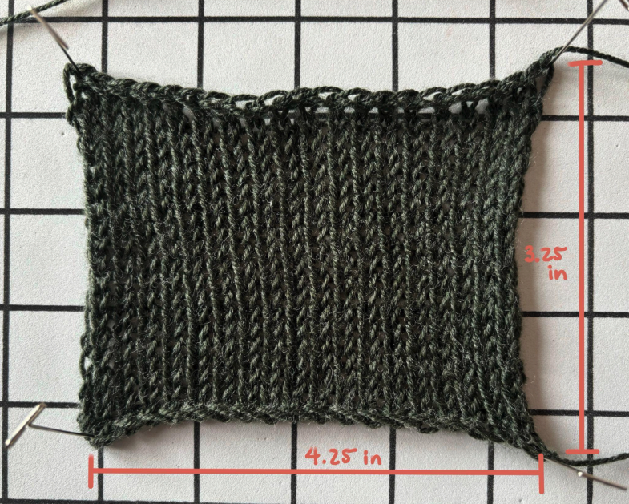

Sleeve style
1
Gauge swatch

Knit a flat swatch in your main stitch pattern. Measure stitches and rows carefully after the swatch has rested.
Knit one flat swatch. Count stitches and rows, then measure its exact width and length (inches) after it has relaxed.
in
in
2
Body measurements

Measure snugly but not tightly, in inches. Hold the tape straight for vertical measurements.
All measurements in inches. Circumferences: measure snugly. Lengths: hold the tape straight, not following the body's curve.
in
in
Garment preview
Short sleeve
Short sleeve

Generated pattern
Back panel
Front panel
Shoulder seaming
Neckline
Sleeves
Finishing
Show calculation log
Fill in your swatch and measurements,
then click Calculate pattern
then click Calculate pattern